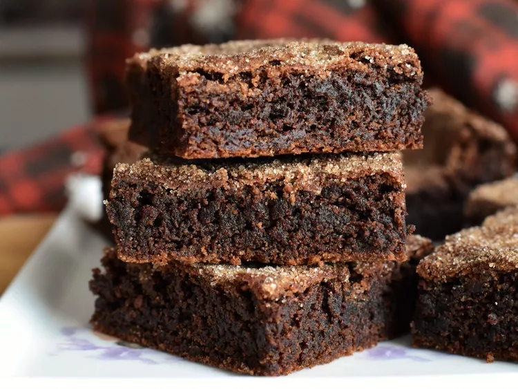

Mocha Cookie Bars

Description
These chocolatey cookie bars are somewhat of a cross between a brownie and a cookie, with a flavor reminiscent of Mexican hot chocolate.
They're best if you err on the side of under- versus over-baking.
Ingredients
- 1 tablespoon instant espresso powder
- 1 tablespoon strong brewed coffee
- 1 cup all-purpose flour
- ¼ cup unsweetened cocoa powder
- ½ teaspoon cream of tartar
- ½ teaspoon baking soda
- ½ teaspoon salt
- ¼ teaspoon ground cinnamon
- ½ cup unsalted butter, softened
- ½ cup white sugar
- ¼ cup firmly packed brown sugar
- 1 large egg, at room temperature
- 2 teaspoons vanilla extract
Topping
- 1 tablespoon white sugar
- ½ teaspoon ground cinnamon
Steps
-
Combine yogurt, lemon juice, 2 teaspoons cumin, cinnamon, cayenne, black pepper, ginger, and 1 teaspoon salt in a large bowl.
Stir in chicken, cover, and refrigerate for 1 hour.
-
Preheat a grill for high heat.
-
Lightly oil the grill grate.
Thread chicken onto skewers, and discard marinade.
Grill until juices run clear, about 5 minutes on each side.
-
Melt butter in a large heavy skillet over medium heat.
Sauté garlic and jalapeño for 1 minute. Season with remaining 2 teaspoons cumin, paprika, and remaining 1 teaspoon salt.
Stir in tomato sauce and cream.
Simmer on low heat until sauce thickens, about 20 minutes.
-
Add grilled chicken, and simmer for 10 minutes.
Transfer to a serving platter, and garnish with fresh cilantro.
Back